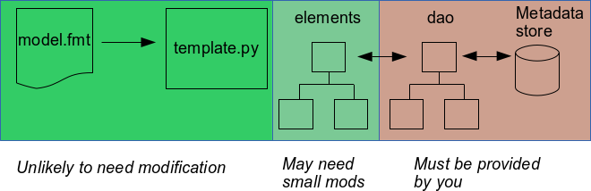

Introduction
The ES-DOC project has recently produced a python API (pyesdoc) designed to allow modelling centres to generate metadata descriptions of models and model simulations structured according to the schema defined by the Common Information Model (CIM). The metadata formatter software described below uses pyesdoc to allow the production of CIM documents from metadata held in a data store (e.g. an sql database or csv files). This development serves as an initial release of the application that will be used to generate the CIM documents required for the CMIP6 programme and an example implementation of pyesdoc that can be shared with other modelling centres who are considering using pyesdoc. The software was developed as part of the Met Office's involvement in the IS-ENES-2 project.
pyesdoc
pyesdoc is a python client library for exploiting the ES-DOC eco-system. It supports documentation creation, validation, serialisation, publishing, I/O & search use cases.
The metadata formatter makes use of a sub-set of pyesdoc's features:
- it uses pyesdoc's representation of CIM elements (see pyesdoc's CIM ontology classes) to build up an object representing a document
- it uses
pyesdoc.validate() to validate the document it has created and
- it uses
pyesdoc.write() to serialise the document object (as HTML, JSON or XML) and save the results to a file
The program doesn't provide publishing functionality at the moment. You can use pyesdoc.read() to read in a document that you've made and saved to a file, and then use the pyesdoc.publish() method if you want to publish the document We hope to provide a publishing program in a future release.
How the program works
The metadata formatter code can be used to build model and experiment documents from metadata sources. The aim of the software is to automate the document drafting and publishing process as much as possible. The program was designed with the following requirements in mind:
- it should be possible for multiple projects to use the program to produce the documents they require, ideally by defining their document formats via some sort of template
- it should use ES-DOC libraries to produce CIM objects and convert them to output documents
- it should allow users to plug in code to interact with their own metadata sources
To meet these requirements, the program has been designed to split up the code that will have to be customised from site to site from the stable code. The structure is illustrated below.

Templates and the template parser are stable and will require no modifications from run-to-run. Classes in the elements package may need small modifications (you may wish to modify which attributes are "required" and which are "optional" for a particular element, since the code marks more metadata as "required" than the CIM does). Classes in the dao package must be provided by each site to interact with its own metadata store(s). Two examples are provided in the package: one which interacts with a MySQL database and one which interacts with a set of (supplied) comma-separated value files.
This is an outline of how the document drafting process works. This process is described in detail with examples further on in the documentation.
- the program reads in a template that defines the document components to be included - templates provide the flexibility to respond to changing metadata requirements from each project
- the template is used to build a tree of objects. Each object represents a CIM type, and it knows where to get its metadata
- the tree is walked from the top down. For each node in the tree:
- metadata related to that object is pulled from the specified source
- an appropriate CIM object is created using the metadata
- the resulting CIM object is added to the document being built
At the end of the process, the document is validated and saved in the selected format (HTML, JSON or XML).
A detailed example - a model document
The model template below defines a simple model document that contains a description of the model itself, responsible parties, citations and the first level of sub-models along with their properties.
| Template file | Parsed document tree |
|---|
{
"Model": {
"dao": {"ModelDao": {}},
"contents": {
"Citation": {
"dao": {"CitationDao": {}}
},
"ResponsibleParty": {
"dao": {"ResponsiblePartyDao": {}}
},
"SubModel": {
"dao": {"SubModelDao": {}},
"contents": {
"ComponentProperty": {
"dao": {"ComponentPropertyDao": {}}
}
}
}
}
}
}
| |
Templates are supplied in JSON format. A template should contain a top-level node ("Model", in this case). That node can (optionally) contain other nodes in its "contents" attribute. Those nodes in turn can have contents. Every node must have a "data access object" or DAO. The DAO should contain the code required to connect to your metadata source, run the necessary queries or searches to pull out metadata for the object, and return it in a simple python dictionary.
When this template is parsed, a tree of objects is created. The diagram above is a representation of the tree that would result from parsing this template. In this case, we'd have a "Model" object at the top, and its contents would be a list containing "ResponsibleParty", "Citation" and "SubModel" objects. Each of the objects would have a dao attribute set to point to its dao object. The SubModel object would also contain a list of contents which just has a single object in it, ComponentProperty.
Once the tree has been created, it is walked from the top node down, as follows.
- ModelDao.metadata() is called to get metadata for the specified model name (which is provided via command-line arguments). Model.cim_element() is called with the metadata as an argument. This method creates a pyesdoc ModelComponent object and sets its attributes using the metadata. The resulting element is returned.
- The program loops over the model's contents. For each object in the list of contents, the DAO object is called to expand out a node into a list, if appropriate. For example, there may be multiple "Citations" for our model, so we first need to get a list of DAO objects, one for each citation. This is done by invoking CitationDao.daos_for_node(). We then loop over the returned list calling each DAO's metadata() method, then calling Citation.cim_element() to build the element from the metadata and then calling Citation.add_to_doc() to add the resulting element to the model document we're building.
- The above step is repeated for each node in contents. If the node contains other nodes, we will walk down that node's contents in the same way to build the container, and then add it to the model document.
Some of the steps in this process are represented below.
Once the tree has been walked, we call the pyesdoc.validate() method to check the contents and then use pyesdoc.write() to save the document.
Assuming we put the template into a file called "simple_model.fmt", the process above could be kicked off by running:
$ python bin/formatCIM.py -d model -f xml -m HadGEM2-ES -o hadgem2es.xml -p CMIP5 -t simple_model.fmt
The resulting output file (hadgem2es.xml) is attached.
The structure of the code
bin
The bin directory contains the command-line program, formatCIM.py.
Required environment
The script requires python 2.7. You will need the following libraries in your PYTHONPATH:
You also need to point to the metadata formatter's lib directory.
You may also have your own local libraries that you require for connecting to your metadata source. For example, to connect to my local database I need MySQLDb.
Running the program
USAGE: formatCIM.py [-c config_dir] -d model|experiment|submodel [-e expt_name] -f html|json|xml [-m model_name] -o output_file -p project [-s submodel_name] -t template_file
You must specify the type of document to produce (-d model|experiment|submodel), the format of the output file (-f html|json|xml), the output file path (-o output_file), the project name (-p project) and the template file (-t template_file). You will also have to supply other options for particular document types. For example, if you ask for a model document, you have to provide the model name (-m model_name).
The "submodel" document type is provided for convenience, since it is expected to be easier for scientists to check a draft for their component (e.g. "Atmosphere" or "Aerosols") rather than having to plough through the entire model document to find the sections they need to review. You can save the resulting document, but it is not expected that you will be able to publish such a document. To produce a sub-model document you will need to provide the model name (e.g. -m HadGEM2-ES) and the sub-model name (e.g. -s Atmosphere).
csv
The csv directory contains database tables dumped out in comma-separated format. These can be read by the crem_csv DAOs so that you can try some test runs of the software without access to the CREM database. Enough metadata has been supplied to allow you to produce a model document (for model HadGEM2-ES), submodel documents and an experiment document (experiment name rcp85).
etc
The etc directory contains an example configuration file, format.cfg. The formatCIM.py program will look for this file by default, but you can tell it to look for it in a different directory using the -c config_dir option.
Configuration file contents
The only mandatory section of the configuration file is the [global] section which must contain a definition of your institute, and the path to your DAO module such that python's importlib.import_module can use the string to import your DAOs.
[global]
institute: mohc
dbpkg: dao.crem_csv
You can also add a [database] section that your DAOs can use to connect to your database, or source of metadata. For example, to use the crem_csv DAOs, you need the following:
[database]
db_dir=/path/to/dir/containing/csv/files
Note that you can also provide configuration options, search constraints or other variables to your DAOs by adding them to the template. In our example above, the DAOs are all specified like this:
"dao": {"ModelDao": {}}
i.e. with empty dictionaries as values, but you may want to insert some configuration:
"dao": {"ModelDao": {"dbname": "modeldb", "dbuser": "foo"}}
lib
The directory contains the following:
-
cli.py which stores methods shared by the command-line programs
-
config.py which reads and returns the configuration file
-
template.py which parses the template, reorganises it if necessary and returns the resulting tree of objects
lib/dao
This directory contains the data access object modules. They are as follows:
-
crem.py The data access objects we use in the Hadley Centre
to talk to the CREM database. Provided to give some example code for talking to a MySQL database. See the internal documentation for more details.
-
crem_csv.py An alternative set of DAOs that read metadata from the (supplied) csv files. Provided to show you an alternative way to write data access objects.
-
dao_exception.py Exceptions related to metadata problems.
-
id_dao.py Data access objects for handling internal references in documents. If you provide an id_dao in a template, document element ids will be gathered and stored in memory as they are made. If an element contains a reference to another internal element in the document, the id is retrieved from memory and is supplied as metadata.
lib/elements
This directory contains classes that represent CIM classes. The parent class is element.Element, which is an abstract base class for the other classes.
Abstract methods that must be implemented
If you find you need to add more element classes, you should base them on the Element abstract base class. You must implement two methods in the child class:
-
cim_element(self, metadata, leaves) This method should create an appropriate pyesdoc CIM object and populate required and optional attributes from the supplied metadata. "Leaves" (i.e. child classes) can be used to derive metadata in those cases that require it. For example, GridMosaic in the grids library uses the contents of leaves to work out whether to set its is_leaf attribute to True or False.
-
add_to_doc(self, doc, cim_element) This method should add cim_element to the appropriate point in the doc. For example, Citation appends cim_element to doc.citations.
Methods you may need to override
-
container_metadata(self, container) You can override this if
your element needs access to some information about its parent to successfully
find its metadata or to build itself. For example, to pull out information
about model sub-components from CREM, we need to access the parent's dao to find out what model or sub-model id it has in our database.
The other classes are divided up into libraries named after the CIM model (e.g. "activity", "shared", "software") with the addition of "misc" to store some pyesdoc-specific classes. Only a subset of CIM classes are currently coded up - enough to build basic model and experiment documents analogous to those produced for CMIP5. Note that I have often marked attributes as "required" even though they are optional in the CIM itself. This is to try to ensure that some useful metadata is provided when documents are built. If you want alter the metadata requirements, edit the "required" and "optional" lists for the elements of interest. Generally I have tried to use class names that are consistent with the equivalent CIM class, but there are some cases (such as "Model" and "SubModel") where I needed to distinguish between different types of "ModelComponent".
templates
This directory contains example templates for producing submodel, model and experiment documents that should have the same structures as those produced for CMIP5. The experiment.fmt document shows how you can write templates for documents that contain internal and external references. This template contains the following types of reference:
- a reference to an external document by name (in this case, to an external model document).
- references to other components in the experiment document by name (for example, conformances that aren't linked to data sources) and
- references by id to other components in the document (for example, conformances that are linked to data sources)
If you are writing a template that needs to use references, you will need to use or write some extra classes.
Referring to an internal component by id
To refer to another component inside the current document by id, use element "DocReference" in your template. You need to specify what sort of element the link is referring to (via attribute "link[type]". You can also (optionally) specify the name of the object to link to if there's only one of them, although that might make your template less flexible. You also need to specify which pyesdoc attribute the reference should be stored in. For example, a simulation run is required to specify the numerical experiment it supports, so we have the following reference section in experiment.fmt:
{
"DocReference": {
"link": {
"type": "NumericalExperiment",
"name": ""
},
"link_to": "supports_references"
}
}
For this to work we also need to define a special "global" DAO at the top of the template:
"id_dao": {"DocIdDao": {}},
This DAO stores the ids of pyesdoc components in memory as they are generated and is used to find ids for internal references. In the example above, a two stage process will occur:
- the container dao (SimulationRunDao) will have its
name_for_reference method called. This will find the matching name(s) for references by running appropriate queries.
-
id_dao is used to find ids for components of the specified type and for the name(s) we just found.
Referring to an internal or external component by name
Add a "ReferenceByName" element to your template. It needs a DAO, which should contain the usual DAO methods (metadata and daos_for_node). The methods need to be able to work out which name(s) to supply for the reference. You also need to define a link_ to attribute. For example, in experiment documents, we need to code a reference to an external model document. This is done in the example experiment.fmt template as follows:
{
"ReferenceByName": {
"dao": {"ModelComponentRefDao": {}},
"link_to": "model_reference"
}
},
Class ModelComponentRefDao uses its internal attributes (project, experiment and model name) to 1) check that it can only find a single model that matches the names and 2) return the short name of the model and the reference type to use, "ModelComponent". The resulting pyesdoc "DocReference" ends up looking like this:
<modelReference ontologyTypeKey="cim.1.shared.DocReference">
<name>HadGEM2-ES</name>
<type>ModelComponent</type>
</modelReference>
In this case the model reference dao can be fairly simple, but other reference DAos may need to handle possible lists of references properly. For example, some types of experiment conformance must refer to a numerical requirement by name, when the conformance isn't of a type that requires a reference to a data source. We represent these in the template as follows:
"Conformance": {
"dao": {"ConformanceDao": {}},
"contents": [
{
"ReferenceByName": {
"dao": {"NumericalRequirementRefDao": {}},
"link_to": "sources_references"
}
}
]
}
Here we have a "Conformance" element that has its own metadata (provided by "ConformanceDao"). It also contains a document reference to a numerical requirement. NumericalRequirementsRefDao uses its container's metadata to find out which numerical requirement(s) are associated with the conformance, and then it pulls out the required metadata to build a suitable reference. This results in the following (example taken from the output experiment XML document):
<conformance ontologyTypeKey="cim.1.activity.Conformance">
<description>Four members initialised from the matching historical ensemble element
e.g. rcp85 element 2 was initialised from historical element 2. The historical
ensemble elements were initialised at 50-year intervals from
piControl.
</description>
<isConformant>True</isConformant>
<sourcesReferences>
<sourcesReference ontologyTypeKey="cim.1.shared.DocReference">
<description>
initial conditions from specific date and experiment (continuation run)
</description>
<name>init_continuation</name>
<type>InitialCondition</type>
</sourcesReference>
</sourcesReferences>
<type>config</type>
</conformance>